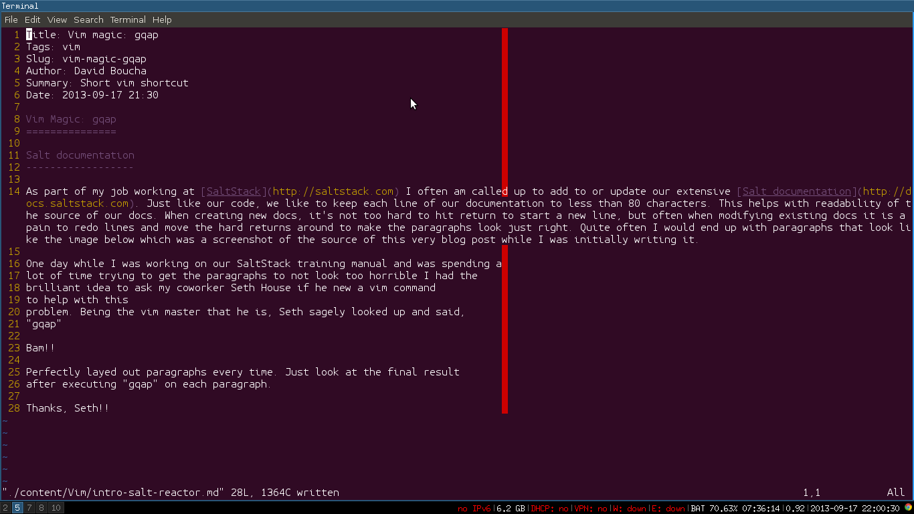
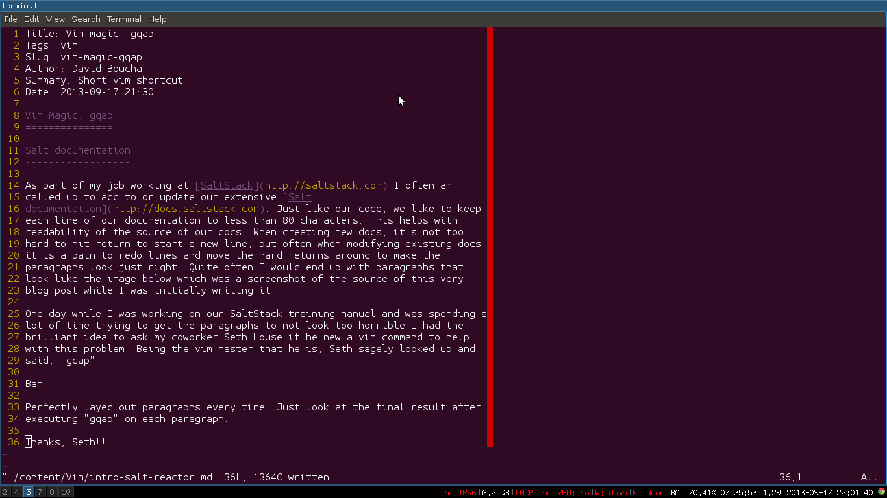

Vim magic - gqap
Salt documentation
As part of my job working at SaltStack I often am called upon to add to or update our extensive Salt documentation. Just like our code, we like to keep each line of our documentation to less than 80 characters. This helps with readability of the source of our docs. When creating new docs, it’s not too hard to hit return to start a new line, but often when modifying existing docs it is a pain to redo lines and move the hard returns around to make the paragraphs look just right. Quite often I would end up with paragraphs that look like the image below which was a screenshot of the source of this very blog post while I was initially writing it.
{kind=link}
One day while I was working on our SaltStack training manual and was spending a lot of time trying to get the paragraphs to not look too horrible I had the brilliant idea to ask my coworker Seth House if he knew a vim command to help with this problem. Being the vim master that he is, Seth sagely looked up and said, “gqap”
Bam!!
Perfectly laid out paragraphs every time. Just look at the final result after executing “gqap” on each paragraph.
{kind=link}
Thanks, Seth!!